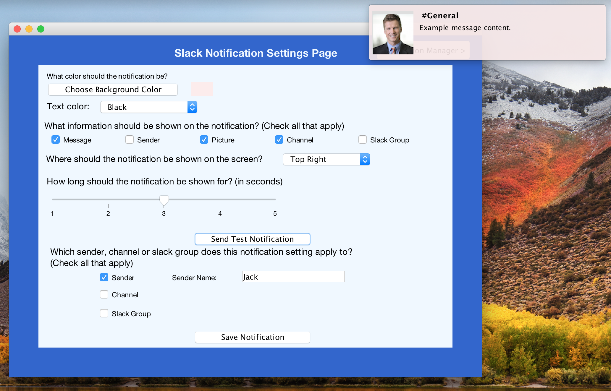
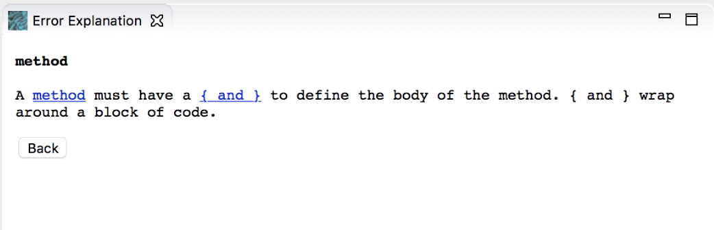

Hi there! I'm Caroline. I'm a graduate student in Human-Computer Interaction at the University of Maryland. I'm interested in Computer Science Education, Human-Computer Interaction, and Software Design.
I like to spin, learn languages, and travel.
Hi there! I'm Caroline. I'm a graduate student in Human-Computer Interaction at the University of Maryland. I'm interested in Computer Science Education, Human-Computer Interaction, and Software Design.
I like to spin, learn languages, and travel.
Examining the Walking Experience of Hybrid Workers Report

Group project: Caroline Berger, Mofe Barrow
Pilot study examining the walking experience of hybrid workers using experience sampling method to collect qualtative (responses to questionnaires) and quantative data (step count).
Research Methods Course with Professor Choe, University of Maryland
Spring 2022
Modern Love Phone Story Video

Group project: Alden Brown, Caroline Berger, Jessica Tsai,
Shanaya Mullan
Interaction design project. Developed a medium-fidelity prototype "Crafting El Barrio". Iterated from low-fidelity sketches. Crafted narrative that describes a day in the life of a person using applications designed by team members.
Interaction Design Studio with Laura Rogers, University of Maryland
Spring 2022
Usability Evaluation Report of Rusutsu Resort website
Accessibility Inspection Report of Rusutsu Resort website

Design recommendations to improve ski resort website based on usability testing, heuristic evaluation, manual accessibility inspection, and automated accessibility scan. Focus on international design, and context of uses with international audiences.
Human-Computer Interaction course with Professor Lazar, University of Maryland
Fall 2021
Portfolio: Financial Interfaces for Financial Behavior Change
Final Report: Financial Interfaces for Financial Behavior Change

Group project: Adnan Husain, Alden Brown, Caroline Berger, Jessica Tsai,
Mofe Barrow, Shanaya Mullan
Contextual inquiry project aimed at exploring different interfaces to inform the design of a future study and the creation of a financial coach to promote financial literacy and financial health.
Research Methods course with Professor Lutters, University of Maryland
Fall 2021
Slack Notification Priority System Project Website

Group Project: Caroline Berger, Juliette Valenchon, Thomas Labourdette
Personalizer and prioritizer of Slack notifications based on user's preferences and message content. Exploiting an user-centered, iterative design process, we first conducted an observational study, observing Slack users conducting tasks such as responding to messages while multitasking. With the observations, we created audience segments. In the next phase, we built a paper prototype and tested it with personas we identified in the first phase. We revised our initial design based on feedback from these user studies and developed a Computer Prototype. We designed a second user study to be carried out by other members of the class and implemented changes to our prototype based on feedback and testing. We presented a Beta notification system for our final project.
Human-Computer Interaction course with Professor Cooperstock, McGill University
Fall 2017
The study examines children in grade 5 who are learning to program in a
professional environment.
Test change
Software Evolution Research Group
School of Computer Science, McGill University
Principal Investigator, Undergraduate Research Assistant
Summer 2017
Poster presented at MOSSER, May 2017 (Montreal Symposium on Software Engineering Research)
Presentation of tool presented at HackMcGill Lightning Talk and for course credit
Novice Helper: Eclipse Integrated Development Environment Plugin to Support Novice Programmers (final report)

Eclipse plugin aimed to help students learn to program.
Software Evolution Research Group
School of Computer Science, McGill University
Honours Project in Computer Science
Fall 2017
caroline.berger2@mail.mcgill.ca
linkedin: /carolinepberger
download my cv